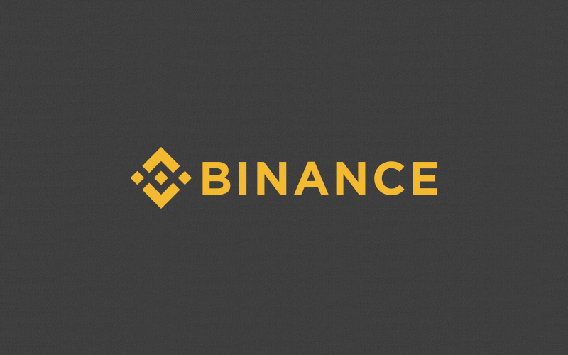
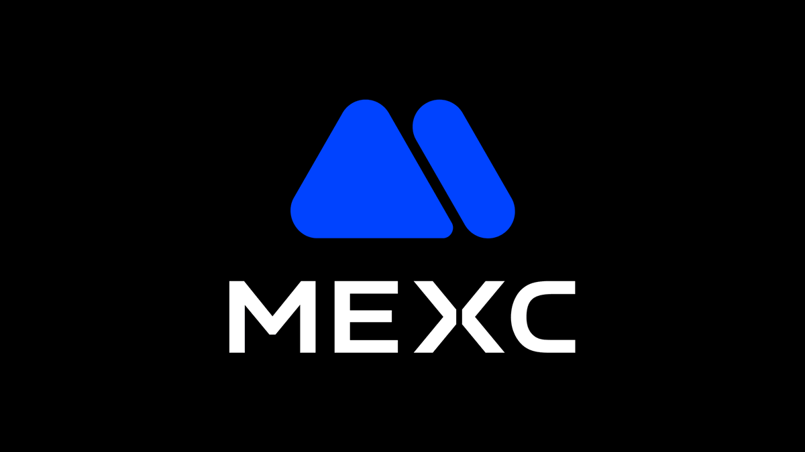
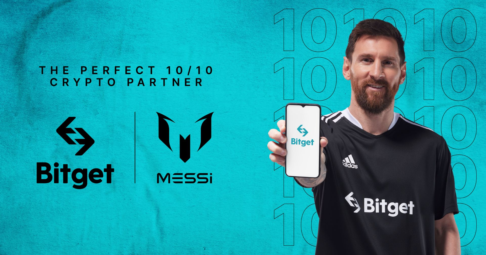

はじめに
このページでは、筆者が実際に使い込んでいる海外仮想通貨取引所を3社厳選して紹介しています。
「海外取引所って大丈夫なの？」「国内取引所とどう違うの？」「どこを選べばいいの？」── そんな疑問をお持ちの方に向けて、なぜ海外取引所を使うべきなのかという理由から、各取引所の特徴・手数料・レバレッジ・おすすめの使い分けまで、初心者にもわかりやすくまとめました。
すべて招待リンク付きなので、このページから登録するだけで手数料割引などの特典を受けることができます。ぜひ参考にしてみてください。
実際に使い込んでいる取引所だけを厳選しました。以下の招待リンクから登録すると、取引手数料の割引などの特典が受けられます。
このページでは、筆者が実際に使い込んでいる海外仮想通貨取引所を3社厳選して紹介しています。
「海外取引所って大丈夫なの？」「国内取引所とどう違うの？」「どこを選べばいいの？」── そんな疑問をお持ちの方に向けて、なぜ海外取引所を使うべきなのかという理由から、各取引所の特徴・手数料・レバレッジ・おすすめの使い分けまで、初心者にもわかりやすくまとめました。
すべて招待リンク付きなので、このページから登録するだけで手数料割引などの特典を受けることができます。ぜひ参考にしてみてください。
目次
仮想通貨を始めるとき、まず国内の取引所（bitFlyer、Coincheck、GMOコインなど）を検討する方が多いと思います。もちろん国内取引所にも安心感はありますが、本格的に仮想通貨で利益を出したいなら、海外取引所を使わない理由はありません。ここでは、筆者が実際に両方を使ったうえで感じた「海外取引所を選ぶべき理由」を正直にお伝えします。
国内取引所で取引できる銘柄は、多くても30〜40種類程度です。金融庁の審査を通った通貨しか扱えないため、話題の新興トークンやDeFi関連銘柄はほぼ取引できません。
一方、海外取引所では数百〜2,000種類以上の通貨を取り扱っています。ビットコインやイーサリアムだけでなく、まだ価格が低いうちに将来性のあるアルトコインを仕込むことが可能です。「100倍になるかもしれないコイン」に出会えるのは海外取引所だけです。
国内取引所の「販売所」で売買すると、表面上は手数料無料でも実質的なスプレッド（売値と買値の差）が3〜5%もかかることがあります。10万円分のビットコインを買って即売ると、3,000〜5,000円の損失です。
海外取引所なら現物取引の手数料は0.1%が標準で、MEXCに至っては現物手数料が完全無料（0%）。同じ10万円の取引でも、コストは100円以下、あるいはゼロです。取引を繰り返すほど、この差は大きくなります。
日本の取引所では、金融庁の規制によりレバレッジは最大2倍に制限されています。10万円の証拠金で20万円分の取引しかできません。
海外取引所では最大125〜500倍のレバレッジをかけることができます。少額の資金から大きなリターンを狙えるのが最大の魅力です。もちろんリスクも大きくなるため、適切な資金管理が前提ですが、「選択肢がある」こと自体が大きなアドバンテージです。
国内取引所でできるのは基本的に現物の売買のみです。海外取引所では、それに加えて以下のような多彩な取引・サービスが利用できます。
「海外取引所は英語だから難しそう」と思われがちですが、現在は主要な海外取引所のほとんどが日本語に完全対応しています。サイトの表示、アプリのUI、カスタマーサポートまで日本語で利用できるため、英語が苦手な方でも問題ありません。Binanceに至っては日本法人を設立しており、国内取引所と同等の安心感があります。
「日本の取引所なら安心」── かつて自分もそう信じていました。しかし、2018年1月のコインチェックNEM（XEM）流出事件で、その考えは完全に覆されました。
筆者自身がこの事件の被害者です。約580億円分の仮想通貨が不正流出し、突然すべての取引が停止。自分の資産があるにもかかわらず、売買はおろか出金すらできない状態が長期間続きました。当時高校生だった自分にとって、「金融庁に登録されている国内取引所でもこんなことが起きるのか」という衝撃は計り知れないものでした。
この経験から言えることは、「国内取引所だから安全」は幻想だったということです。もちろんその後、コインチェックは補償を行い、セキュリティも強化されました。しかし、「自分の資産に一切触れない期間が存在した」という事実は変わりません。
さらに、日本の取引所には以下のような構造的な問題もあります。
国内取引所が「ダメ」だと言いたいわけではありません。日本円の入出金には便利ですし、税金の管理もしやすいです。ただ、国内取引所「だけ」で投資を続けるのは、手数料で損をし、機会を逃し続けることを意味します。筆者はコインチェック事件を経験したからこそ、「一つの取引所に資産を集中させない」「海外取引所も使いこなす」ことの重要性を身をもって知っています。
| 比較項目 | 国内取引所 | 海外取引所 |
|---|---|---|
| 取扱通貨数 | 約20〜40種類 | 350〜2,000種類以上 |
| 現物手数料 | スプレッド3〜5%（販売所） | 0〜0.1% |
| 最大レバレッジ | 2倍 | 125〜500倍 |
| 先物取引 | ほぼ不可 | 対応（ショートも可能） |
| コピートレード | なし | あり（Bitget等） |
| 新規トークン上場 | 非常に遅い | 最速で即日上場 |
| 日本語対応 | 完全対応 | ほぼ完全対応 |
| 金融庁の登録 | 登録済み | 一部のみ（Binance Japan等） |
もちろん、海外取引所にはデメリットもあります。日本の金融庁に未登録の取引所もあるため、万が一のトラブル時に日本の法律で保護されない可能性があります。また、税金の計算も自分で行う必要があります。しかし、国内取引所でもコインチェック事件のようなリスクは存在したわけです。それなら、手数料の安さ・取引の自由度・銘柄の豊富さを考えれば、海外取引所を「選択肢に入れない」ほうがよほどもったいないというのが、実際に国内取引所で痛い目に遭った筆者の結論です。

| 運営会社 | Binance Holdings Ltd.（グローバル）/ Binance Japan株式会社（日本法人・関東財務局 登録番号 第00024号） |
|---|---|
| 設立 | 2017年（日本法人は2023年8月サービス開始） |
| 取引手数料 | 現物: 0.1%（BNB払いで0.075%）｜先物: メイカー 0.02% / テイカー 0.05% |
| 取扱通貨数 | グローバル版: 350種類以上 / 1,000+ペア｜日本版: 50〜80銘柄 |
| 最大レバレッジ | 125倍（BTC/USDTペア）※新規ユーザーは最初の60日間は最大20倍に制限 |
| 日本語対応 | 完全対応（サイト・アプリ・サポート全て日本語OK） |
| セキュリティ | SAFUファンド（約10億ドル規模の緊急保険基金）/ 2FA / コールドウォレット / 出金アドレスホワイトリスト |
| 主なサービス | 現物・先物取引 / Launchpad / ステーキング / セービング / コピートレード / NFT / Binance Pay |
迷ったらまずBinanceで口座を作っておけば間違いありません。世界で最も使われている取引所であり、日本法人もあるので安心感は群を抜いています。グローバル版なら350種類以上の通貨で先物取引も可能。初心者から上級者まで、全員におすすめできる取引所です。

| 運営会社 | MEXC Global Ltd.（2018年設立） |
|---|---|
| 取引手数料 | 現物: メイカー 0% / テイカー 0%（完全無料）｜先物: メイカー 0% / テイカー 0.02% |
| 取扱通貨数 | 現物: 2,000種類以上 / 2,500+ペア｜先物: 600種類以上 ── 業界最多クラス |
| 最大レバレッジ | BTC/USDTで最大500倍 ── 他の主要取引所は最大125〜200倍 |
| 日本語対応 | 対応あり（サイト・アプリ共に日本語UI） |
| セキュリティ | 2FA / フィッシング対策コード / コールドウォレット管理 / 米国MSBライセンス取得 |
| 主なサービス | 現物・先物取引 / Kickstarter / Launchpad / ステーキング / コピートレード / エアドロップ |
| KYC | KYCなしでも取引開始可能（出金制限あり。KYC完了で制限解除） |
筆者は3年以上MEXCをメインの取引所として使い続けています。先物取引の500倍レバレッジと手数料の安さが最大の魅力ですが、それ以上にイベントの多さが気に入っています。エアドロップやKickstarterで無料でトークンを獲得し、先物ではハイレバで効率よくトレードする ── このサイクルを回せるのはMEXCだけです。3年使ってきて大きなトラブルもなく、出金も問題なくできています。先物取引をメインにしたい方には、自信を持っておすすめできます。

| 運営会社 | Bitget Limited（2018年設立・世界50ヶ国以上で展開・ユーザー数1.2億人以上） |
|---|---|
| 取引手数料 | 現物: 0.1%（BGB払いで0.08% / 最大80%割引）｜先物: メイカー 0.014% / テイカー 0.042% |
| 取扱通貨数 | 現物: 700種類以上 / 1,200+ペア｜先物: 530ペア以上 |
| 最大レバレッジ | 150倍（BTC/ETHなど主要通貨ペア） |
| 日本語対応 | 完全対応（UI・FAQ・24時間日本語ライブチャット・メールサポート） |
| セキュリティ | 保護基金3億ドル以上 / 準備金証明を毎月公開（準備率169%）/ SOC 2 Type II認証 / コールドウォレット |
| 主なサービス | 現物・先物取引 / コピートレード / ボットコピートレード / ステーキング / Launchpad / トークン化資産取引 |
| スポンサー | LALIGA（スペインサッカーリーグ）/ MotoGP 公式パートナー |
「自分で取引するのはまだ自信がない」「チャートを見る時間がない」という方には、Bitgetのコピートレードが最適です。まずはプロの取引をコピーしながら市場の動きを学び、慣れてきたら自分でもトレードしてみる ── そんなステップアップの入口としておすすめできます。セキュリティの透明性も業界随一なので、資金を預ける安心感も高いです。
| 比較項目 | Binance | MEXC | Bitget |
|---|---|---|---|
| 現物手数料 | 0.1%（BNB払い: 0.075%） | 0%（無料） | 0.1%（BGB払い: 0.08%） |
| 先物手数料（テイカー） | 0.05% | 0.02% | 0.042% |
| 取扱通貨数 | 350+ | 2,000+ | 700+ |
| 最大レバレッジ | 125倍 | 500倍 | 150倍 |
| コピートレード | あり | あり | 業界最大級 |
| 日本法人 | あり | なし | なし |
| セキュリティ基金 | SAFU（約10億ドル） | 非公開 | 保護基金（3億ドル+） |
| KYCなし取引 | 不可 | 可能 | 不可 |
| おすすめの人 | 初心者〜上級者 | 先物トレーダー | 初心者・自動取引派 |
世界最大の取引量と日本法人の安心感。初めて海外取引所を使う方は、まずBinanceで口座を作るのがベストです。取引量が多いためスプレッドが狭く、ステーキングやLaunchpadなどの運用サービスも一通り揃っています。「海外取引所が怖い」と感じている方でも、日本法人がある Binanceなら安心して始められます。
500倍レバレッジは他社では絶対に使えない武器です。しかも先物手数料もメイカー0%・テイカー0.02%と最安級。少額の証拠金から大きなリターンを狙いたい方、すでに先物取引の経験がある中〜上級者のメイン口座として最適です。筆者自身も3年以上使い続けている取引所です。
コピートレードでプロの取引を自動フォローできるため、自分でチャートを読めなくても始められます。セキュリティの透明性（準備金証明を毎月公開）も高く、大切な資金を預ける安心感があります。「まずは見ながら学びたい」という方の最初の一歩に最適です。
口座開設は全て無料なので、3つとも口座を作っておくことをおすすめします。取引所ごとに強みが違うため、目的に応じて使い分けるのが最も効率的です。また、一つの取引所に資産を集中させるよりも、複数に分散しておくほうがリスク管理の観点からも安全です。各取引所で開催されるイベントやエアドロップも、口座がなければ参加できません。
いいえ、日本居住者が海外取引所を利用すること自体は違法ではありません。ただし、金融庁に未登録の取引所については、金融庁から注意喚起が出されている場合があります。利用は自己責任となりますので、リスクを理解したうえでご利用ください。
はい、かかります。日本居住者の場合、海外取引所で得た利益も「雑所得」として確定申告が必要です。年間20万円以上の利益が出た場合は、必ず申告してください。取引履歴はCSVでダウンロードできるので、税計算ツール（Koinly、CryptoTaxなど）を活用すると便利です。
Binance Japanは日本円での銀行入出金に対応しています。MEXC・Bitgetは日本円の直接入金には対応していないため、国内取引所でビットコインやUSDTを購入してから送金するか、クレジットカード購入（手数料が高め）を利用する形になります。
レバレッジ自体は「使える上限」であって、常に500倍で取引する必要はありません。実際には10〜50倍程度で運用するのが一般的です。重要なのは、必ずストップロス（損切り）を設定し、一度の取引で失ってもいい金額を事前に決めておくことです。レバレッジは道具であり、使い方次第でリスクはコントロールできます。
一つだけ選ぶならBinanceをおすすめします。日本法人がある安心感、サービスの充実度、流動性の高さなど、総合力で頭一つ抜けています。ただし、口座開設は全て無料なので、3つとも作っておいて損はありません。
当ページのリンクはアフィリエイトリンク（招待リンク）を含みます。リンク経由で登録いただくと、手数料割引などの特典が適用される場合があります。当サイトの運営費用の一部に充てさせていただいております。
海外取引所の利用は自己責任となります。Binance Japanを除き、日本の金融庁に登録されていない取引所を含むため、利用にあたっては各自で十分にご確認ください。金融庁が公表している「無登録で暗号資産交換業を行う者の名称等」もあわせてご参照ください。
先物取引（レバレッジ取引）は元本以上の損失を被る可能性があります。特に高倍率のレバレッジ取引は、利益も損失も大きくなるため、余裕資金の範囲内で十分なリスク管理のもとで行ってください。投資は自己責任です。
掲載情報は2026年3月時点のものです。手数料・サービス内容・レバレッジ倍率等は頻繁に変更される可能性があります。最新情報は各取引所の公式サイトをご確認ください。